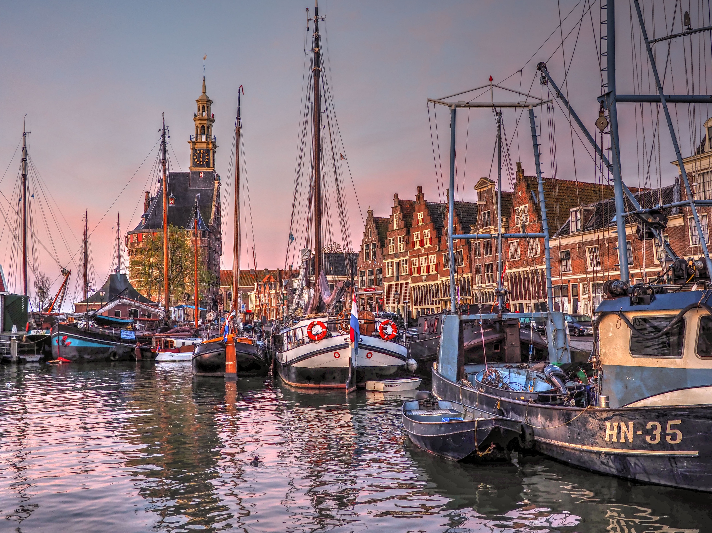

September 14th, 1716
Boston Lighthouse Cruises and the 250th Anniversary of Siege of Boston

Boston's 250th Anniversary Celebration
Celebrate 250 years of history in Boston with a summer full of unforgettable events honoring the American Revolution. From immersive reenactments and waterfront festivals to live performances and historical tours, the city will come alive in a tribute to its revolutionary roots. Whether you're a history lover or just looking for something fun to do, Boston’s 250th anniversary celebration offers something for everyone. Join us and experience the spirit of 1776 in the place where it all began.
Boston Lighthouse Cruises and the 250th Anniversary of Siege of Boston

Lexington was getting ready for a fight even before British troops showed up on April 19, 1775. That night, Paul Revere and William Dawes, both members of the Sons of Liberty—rode quickly out of Boston and reached the town just before midnight. They went to the home of Jonas Clarke, who was related to John Hancock, to warn him and Samuel Adams that British forces were on their way. You can start your Patriots’ Day bright and early by watching their arrival and the moment the warning is given in Lexington. There will be a live reenactment, including real horses, to bring the scene to life. This event is organized in partnership with the Lexington Minute Men. Keep in mind that Hancock Street will be closed before the event, and there won’t be parking available nearby. It’s best to park at 57 Bedford Street.
Curio Spice Co can come to your event, office, or venue and set up a visually stunning, spice market–inspired tea bar. They provide a variety of tea bases along with herbs, spices, dried fruits, flowers, and other botanicals, and guide guests through creating their own custom tea blends. Each person leaves with a glass jar of their personalized loose-leaf tea, plus a Tea & Spice Pairing Wheel. Designed to run smoothly over 2–3 hours, this experience works great as an add-on to events like cocktail receptions, dinner parties, watch parties, or workplace lunches.
Located in historic Lexington, MA -- birthplace of American liberty -- the Inn at Hastings Park, Boston area's only Relais & Châteaux property, sits steps from the Lexington Battle Green where the "shot heard 'round the world" ignited the American Revolution. On this day celebrating the 251st Anniversary of the Battle of Lexington, Town Meeting Bistro, inspired by New England's revolutionary-era town meetings, will be offering a special breakfast/brunch buffet. Available after the early morning Battle of Lexington reenactment on historic Lexington Green and before the Town of Lexington’s Patriots’ Day parade. 6:00 am - 3:00 pm. Adults $75 (includes appetizer and dessert buffet plus choice of one entrée and mimosa or sparkling wine); Children 4-12 $40; Ages 3 and under free (plus tax & gratuity).
From the country's oldest lighthouse to the world's oldest commissioned warship afloat and everything in between, you'll see and hear about it all on this unique Lighthouses and Tales of Boston Harbor 90-minute cruise through Boston Harbor's history and present day. We'll journey up close for photo ops of Boston Light, originally built in 1716, and Long Island Head Light, with two additional lighthouse views. We'll sail past historic forts, learn about how Boston built the land upon which it sits, the bridges that span the rivers that flow into the harbor, view the Boston Harbor Islands, and more. This historical cruise is hosted by Boston area raconteur, David Coffin, who has been leading Boston Harbor tours since 2000. He is also well known as a chanty singer so you never know what might happen on any given tour!